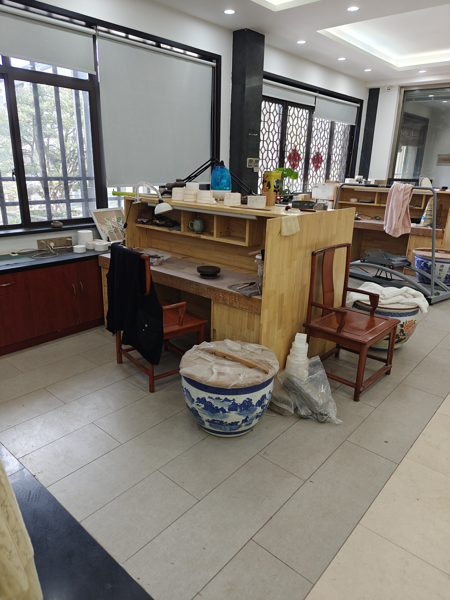

01宜兴 · 江苏EST. 1976
向下探索
OUR BELIEF / 我们相信
器物不是静止的
它会继续生活。
一把壶从矿料开始，在匠人的手里成形，在你的桌上留下温度。云琢紫砂用可交互的数字体验，让看不见的过程先被理解。
打开 Web3D 预览 →ONE WORKSPACE / 进入工坊
从看见器物
到亲手试作。
主页只做一件事：把你带到可交互的紫砂壶定制预览。旋转器型，换一块泥色，再试试梅兰竹菊的纹样与彩绘。

HANDMADE IN YIXINGTHE HAND / 手的温度
一把壶的旅程，
从手开始。
紫砂的迷人之处，不只是它最终的样子。拍打、围身、整口、烧成，每一步都让泥土变成了只属于它自己的性格。
4+基础器型
12泥色与纹样
1数字工坊
“泥有五色，器有千面。
真正留下来的，是人与器相处的时间。”